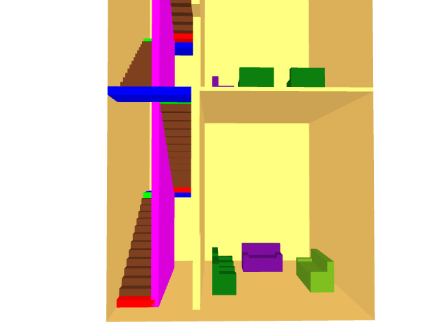

$Date$
$Revision$
Blockaid reads in an FDS input file and outputs a new one where specified
groups of blockages, holes and vents are replicated, translated and/or rotated.
These groups are surrounded with &BGRP and &EGRP keywords as in:
&BGRP GRP_ID='group label' ORIG=x,y,z /
one or more &OBST, &VENT, &HOLE or &GRP lines
&EGRP /
where ORIG is the point about which rotation occurs. Note that the &BGRP &EGRP pair may contain references to other groups.
A group may be replicated using:
&GRP GRP_ID='group label' XYZ=x,y,z ROTATE=angle /
where x,y,z is the translation amount and angle is snapped to the nearest 90 degrees.
A collection of groups may be defined and stored in a file. This file is referenced using the &INCL keyword as in &INCL FILE='file name' /
&BGRP GRP_ID='COUCH' ORIG=3.0,3.0,0.0 / &OBST XB= 3.0, 5.0, 3.5, 3.7, 0.5, 0.9 , RGB=128, 64, 32 / &OBST XB= 3.0, 3.2, 3.0, 3.5, 0.5, 0.6 , RGB= 64, 96, 64 / &OBST XB= 4.8, 5.0, 3.0, 3.5, 0.5, 0.6 , RGB= 32,128, 96 / &OBST XB= 3.0, 5.0, 3.0, 3.7, 0.0, 0.5 , RGB= 0,196,128 / &HOLE XB=-0.4, 4.8, 3.2, 3.5, 0.0, 0.4 / &HOLE XB= 3.1, 4.9, 3.5, 3.7, 0.0, 0.1 / &EGRP /

A group of three couches defining a living room arrangement:
&BGRP GRP_ID='LIVE1' ORIG=0.0,0.0,0.0 / &GRP GRP_ID='COUCH' XYZ=0.0, 0.0,0.0 ROTATE=180.0 / &GRP GRP_ID='COUCH' XYZ=2.0, 0.8,0.0 ROTATE=270.0 / &GRP GRP_ID='COUCH' XYZ=0.0, 3.0,0.0 ROTATE=0.0 / &EGRP /
The &OBST and &HOLE keywords used by FDS to define couches in 4 living room arrangements are expanded by Blockaid using:
&GRP GRP_ID='LIVE1' XYZ=0.0,0.0,0.0 ROTATE=0.0 / &GRP GRP_ID='LIVE1' XYZ=4.0,0.0,0.0 ROTATE=90.0 / &GRP GRP_ID='LIVE1' XYZ=4.0,4.3,0.0 ROTATE=180.0 / &GRP GRP_ID='LIVE1' XYZ=0.0,4.3,0.0 ROTATE=270.0 /
Group of blockages to define a set of stairs for one half of a building story:
&BGRP GRP_ID='STAIRS' ORIG=0.0,0.0,0.0 / &OBST XB= 0.0, 1.0, 0.0, 0.4, 0.0, 0.2 , COLOR='RED' / stairwell &OBST XB= 0.0, 1.0, 0.3, 0.7, 0.2, 0.4 , RGB=100,50,25/ stairwell &OBST XB= 0.0, 1.0, 0.6, 1.0, 0.4, 0.6 , RGB=100,50,25/ stairwell &OBST XB= 0.0, 1.0, 0.9, 1.3, 0.6, 0.8 , RGB=100,50,25/ stairwell &OBST XB= 0.0, 1.0, 1.2, 1.6, 0.8, 1.0 , RGB=100,50,25/ stairwell &OBST XB= 0.0, 1.0, 1.5, 1.9, 1.0, 1.2 , RGB=100,50,25/ stairwell &OBST XB= 0.0, 1.0, 1.8, 2.2, 1.2, 1.4 , RGB=100,50,25/ stairwell &OBST XB= 0.0, 1.0, 2.1, 2.5, 1.4, 1.6 , RGB=100,50,25/ stairwell &OBST XB= 0.0, 1.0, 2.4, 2.8, 1.6, 1.8 , RGB=100,50,25/ stairwell &OBST XB= 0.0, 1.0, 2.7, 3.1, 1.8, 2.0 , RGB=100,50,25/ stairwell &OBST XB= 0.0, 1.0, 3.0, 3.4, 2.0, 2.2 , RGB=100,50,25/ stairwell &OBST XB= 0.0, 1.0, 3.3, 3.7, 2.2, 2.4 , RGB=100,50,25/ stairwell &OBST XB= 0.0, 1.0, 3.6, 4.0, 2.4, 2.6 , RGB=100,50,25/ stairwell &OBST XB= 0.9, 1.1, 0.0, 4.3, 0.0, 2.8 , COLOR='MAGENTA' / stairwell &OBST XB= 0.0, 1.0, 3.9, 4.3, 2.6, 2.8 , COLOR='GREEN' / stairwell &OBST XB= 0.0, 2.0, 4.3, 5.3, 2.6, 2.8 , COLOR='BLUE' / stairwell &EGRP /
Combine two sets of half stairs to form a full set of stairs:
&BGRP GRP_ID='BISTAIRS' ORIG=0.0,0.0,0.0 / &GRP GRP_ID='STAIRS' XYZ=0.0,0.0,0.0 / &GRP GRP_ID='STAIRS' XYZ=0.0,-1.0,2.8 ROTATE=180.0 / &EGRP /
The &OBST keywords used by FDS to define a set of stairs for 3 floors are expanded by Blockaid using:
&GRP GRP_ID='BISTAIRS' XYZ=0.0,1.0,0.0 / &GRP GRP_ID='BISTAIRS' XYZ=0.0,1.0,5.6 / &GRP GRP_ID='BISTAIRS' XYZ=0.0,1.0,11.2 /